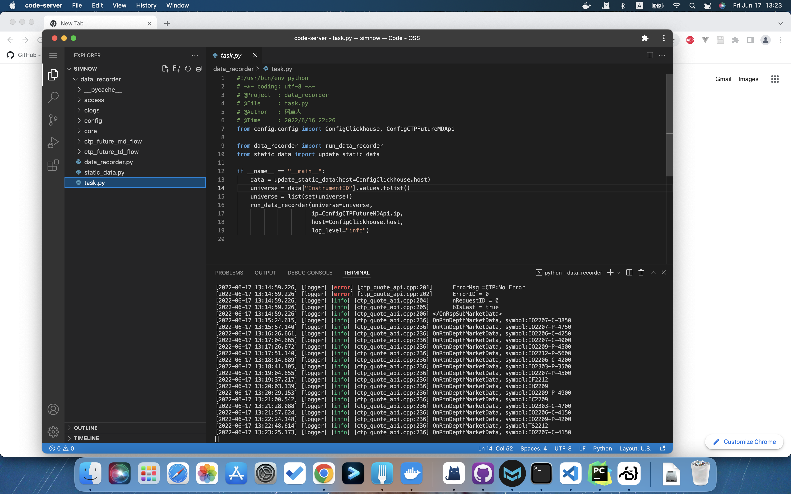
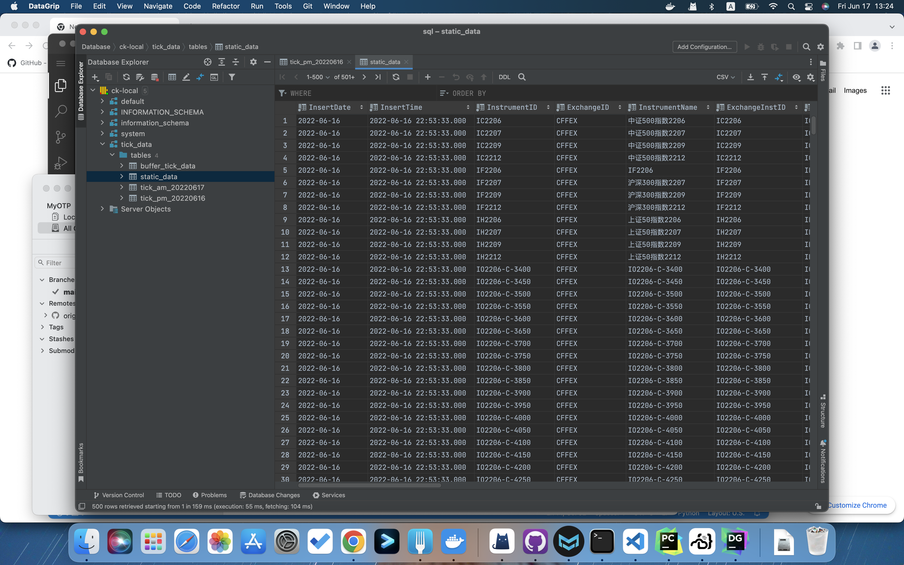

简介
DataRecorder行情收录系统单独部署，在每日开盘前通过交易接口获取当日合约订阅列表，启动后行情数据定时批次写入clickhouse的缓存区。行情收录系统由static_data、data-recorder和app三部分组成。
- static_data封装ctp-future交易接口，每日盘前启动获取当日可订阅合约代码列表。
- data_recorder封装ctp-future行情接口，定时写入clickhouse的buffer-table。
- app是完整的应用，通过python将
static_data和data-recorder两个模块组合使用。
启动方式
配置config目录下账户密码，使用python task.py启动程序。
1 | # SimNow ctp-future交易接口设置 |
在coder-server内启动程序 
正常运行的状态，tick数据写入clickhouse的buffer-table，数据库自行管理buffer异步落地。

Debug
- cmake编译的时候遇到
/usr/bin/ld cant find -lthosttraderapi错误将hosttraderapi.so重命名为libthosttraderapi.so - 运行的找不到
libthosttraderapi.so库,使用so cp -f到/usr/lib；
字段设置
交易时间
对不同品种的期货和期权交易时间不同，使用ctp柜台可以直接取最长的时间范围将所有的品种交易时间全部涵盖。
TradingDay和ActionDay有什么区别？
在CTP的设计里，TradingDay用来表示交易日，ActionDay表示当前实际日期。期货交易分为日夜盘，这两个日期在日盘的时候是一致的，但在夜盘就有了区别，是因为当天夜盘是属于第二天这个交易日。例如20190830（周五）晚上21点开始交易，交易日TradingDay是20190902（周一），但实际日期ActionDay是20190830。
针对这个问题MyOTP系统直接弃用了这两个字段，使用本地获取的时间和日期来定位行情数据并计算相关指标。
本地时间戳
逐条行情添加一个本地时间戳的设计，可以准确的计量交易所发出和系统接收中间网络传输抖动情况，但会降低系统tick-to-order的穿透时间。这里由于我的策略不是盘口高频做市策略，所以对这个时间损耗不敏感，为了方便后续进行数据分析就把这个时间戳加上了。
主力合约
ctp柜台无法直接标识主力合约，在行情收录系统中是将所有的合约全部订阅。如果希望只订阅主力合约或成交活跃的几个合约，可以使用last-data模块获取最新数据截面，并过滤计算。
定时运行
Python接口封装调用
1 | # https://lz5z.com/Python%E5%AE%9A%E6%97%B6%E4%BB%BB%E5%8A%A1%E7%9A%84%E5%AE%9E%E7%8E%B0%E6%96%B9%E5%BC%8F/ |
进程管理
1 | 后台运行程序，会有一个进程号 |
nohup指不断地运行，是no hang up的缩写，指不间断，不挂断。运行一个进程的时候，不想让其在你退出账号时关闭，即可用nohup。
- 0 表示stdin标准输入，用户键盘输入的内容
- 1 表示stdout标准输出，输出到显示屏的内容
- 2 表示stderr标准错误，报错内容
- 2>&1是一个整体，>左右不能有空格，即将错误内容重定向输入到标准输出中去。
行情频率
深交所：
行情内容：在基本即时行情的基础上，实时买卖盘由五档扩展到十档，并增加最佳价位的前50个分档明细、逐笔委托、逐笔成交等信息；
发布频率：3秒/次；
传输形式：TCP；
上交所：
行情内容：在Level-1基础上增加委托信息（如委托笔数、委托数量及加权平均价格；前10档的价格、委托数量及委托笔数；前1档价位前50笔订单的委托数量；总的价位深度数量）、成交信息（逐笔成交明细数据买／卖方订单成交的最长等待时间）、增值数据（买／卖方的累计撤单笔数、数量和金额 ETF申购）
发布频率：3秒/次；
传输形式：TCP；
大商所：
行情内容：5级深度委托行情、最佳买卖价位上前10笔分笔委托量、加权平均委买价格、实时结算价、分价位成交量统计等8种数据；
发布频率：0.25秒/次；
传输形式：TCP、UDP点播及组播；
郑商所：
行情内容：合约编码、前收盘、前结算、昨持仓量、开盘价、收盘价、最高价、最低价、最新价、申买价、申卖价、申买量、申卖量、结算价、均价、涨停板、跌停板、成交量、持仓量、5级深度委托行情、委买总量、委卖总量；
发布频率：0.25秒/次；
传输形式：TCP或UDP组播；
上期所/能源中心：
主要内容：合约编码、最新价、合约数量、成交金额、持仓量、最高价、最低价、今开盘、今收盘等；
发布频率：0.5秒/次；
传输形式：TCP或UDP组播；
中金所：
行情内容：合约名称、交割月份、最新价、涨跌、成交量、持仓量、申买价（最优五笔）、申卖价（最优五笔）、申买量（最优五笔）、申卖量（最优五笔）、结算价、开盘价、收盘价、最高价、最低价、前结算价、成交额等；
发布频率：0.5秒/次；
传输形式：TCP或UDP组播；